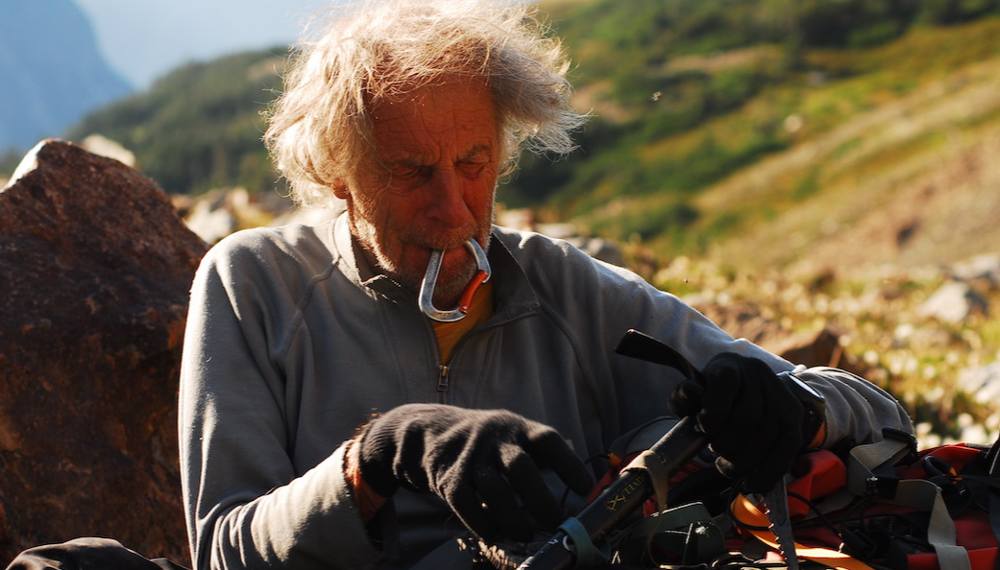
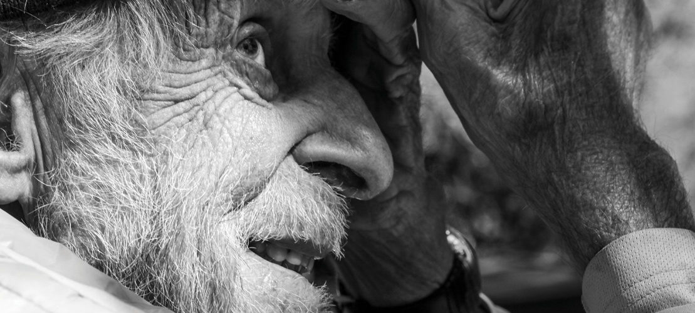
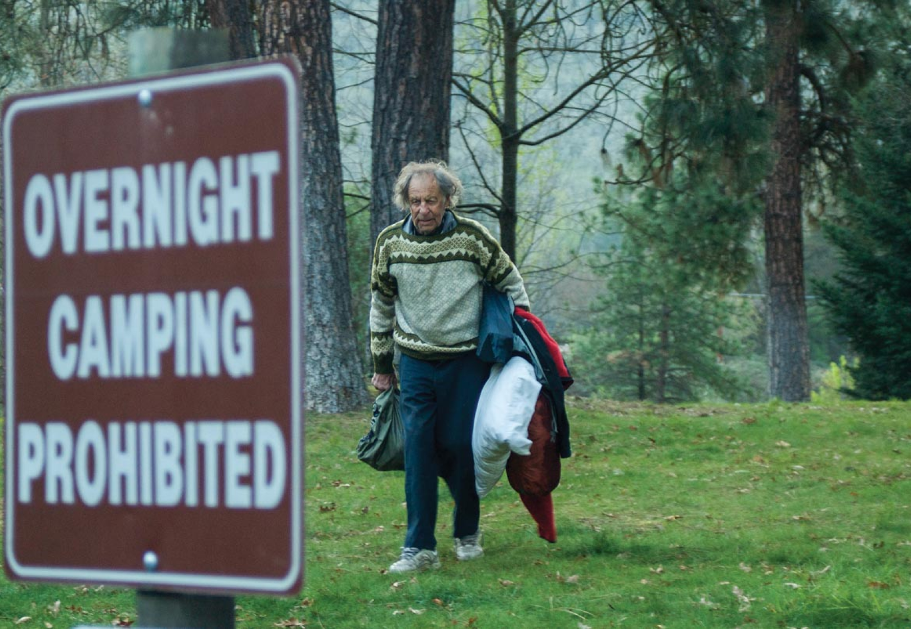

Friedrich Wolfgang Beckey (14 January 1923 – 30 October 2017), known as Fred Beckey, was an American rock climber, mountaineer and book author, who in seven decades of climbing achieved hundreds of first ascents of the tallest peaks and best routes in remote corners of Alaska, the Canadian Rockies and the Pacific Northwest. Among the Fifty Classic Climbs of North America, seven were established by Beckey, often climbing with some of the best known climbers of each generation.
Beckey was born in 1923 near Düsseldorf, Germany to Klaus Beckey, a surgeon, and Marta Maria Beckey who was an opera singer. In 1925 economic hardships due to hyperinflation in the Weimar Republic forced his family to emigrate to the United States, settling up in Seattle, Washington. His brother, Helmut "Helmy" Beckey, was born in Seattle in 1926 and would later become Fred's frequent climbing partner. At age twelve, Fred Beckey climbed Boulder Peak in the Cascades by himself, after wandering off on a family camping trip. Afterwards, his family signed him up with the Boy Scouts where he learned the basic concepts of climbing. Later he joined The Mountaineers club. In 1939, at sixteen, Fred and two friends climbed 7,292-foot Mount Despair in the North Cascades, which was considered unclimbable at the time. In 1942, the teenage Beckey brothers snatched a second ascent of Mount Waddington, which was then considered the most difficult climb in North America. Beckey follow that by many more first ascents of summits in the Olympic and North Cascade ranges. In 1942 he joined 10th Mountain Division, based in Colorado, and served as an instructor.
After the war, Beckey studied business administration at the University of Washington, while still spending a lot of time climbing mountain ranges in the Northwest and desert rock formations in the Southwest. After graduation in 1949 he worked for the Seattle Post-Intelligencer and became a print shop sales representative. However, he soon discovered that his work interfered with his climbing. For a time, he worked as a delivery truck driver, which left him time for climbing. As time went on, he decided that climbing was his life's focus. He never married or had children, he never pursued a professional career, he never sought money or financial security as a goal—his goal was to climb mountains.
In 1955 Beckey joined the International Himalayan Expedition to climb the world’s fourth-highest peak, Lhotse. During the expedition his tentmate developed cerebral edema at 23,000 feet on the night before they were to attempt the summit. Beckey descended in the blizzard to get help, but was later blamed by his teammates for abandoning his partner, who was rescued by others.[9][2] Consequently although Beckey seemed a likely choice as a member for first American Everest Expedition in 1963, he was never invited by his ex-teammates. Afterwards Beckey shied away from the large team efforts abroad, preferring smaller alpine-style undertakings alone or with a few companions seeking out Americas last unclimbed peaks or striking routes considered too difficult to climb. He often climbed 40 or 50 different summits a year, and over the decades managed to achieve nearly one thousand first ascents.
1939 Mount Despair, North Cascades
1940 Forbidden Peak, North Cascades - with brother Helmy, Lloyd Anderson, Jim Crooks, and Dave Lind.
1945 Price Glacier, Mount Shuksan, North Cascades with Jack Schwabland and Bill Granston
1946 East Ridge Devils Thumb, Alaska with Bob Craig and Clifford Schmidtke (Aug 25)
1946 Liberty Bell, North Cascades, Washington
1947 Mount Hozomeen's South Peak
1947 North Peak, Liberty Bell, North Cascades
1948 North Ridge of Mount Baker, North Cascades Fred Beckey, Ralph and Dick Widrig
1954 Northwest Buttress to North Peak, Denali, Alaska (May 27) with Donald McLean, Charles Wilson, Henry Meybohm and Bill Hackett.
1954 South Ridge, Mount Deborah with Heinrich Harrer and Henry Meybohm
1954 West Ridge Mount Hunter (Alaska) - with Heinrich Harrer and Henry Meybohm
1959 Crescent Arete, Mount Owen, Tetons, with Yvon Chouinard
1959 Yocum Ridge, Mount Hood, Oregon, with Leo Scheiblehner
1961 North Face, Mount Sir Donald, Rogers Pass, British Columbia with Yvon Chouinard
1961 Beckey-Chouinard Route on South Howser Tower, Bugaboos, Canada with Yvon Chouinard
1961 The Priest, Castle Valley, Utah, with Layton Kor, Harvey Carter, and Annie Carter
1962 Question Mark Wall, Lone Peak Cirque, Wasatch Range, Utah
1963 Complete North Ridge, Mount Stuart, North Cascades, Washington with Steve Marts: 226
1963 Northeast Buttress of Mount Slesse, British Columbia, Canada with Steve Marts and Eric Bjornstad: 226–227
1963 West Buttress (IV 5.8 A1), Musembeah Peak, Wind River Range, Wyoming (September) with Layton Kor: 245
1963 Beckey Route, Elephant's Perch, Sawtooth Mountains, Idaho
1964 Angel's Crest, The Chief, Squamish, British Columbia
1965 Mount Sir Donald, Rogers Pass, British Columbia, First Winter Ascent
1966 Mount Seattle, Saint Elias Mountains, Alaska
1967 El Matador (NCCS IV, A3), Devils Tower, Wyoming. FA with Eric Bjornstad: 403
1968 Direct East Buttress (IV F8 A4), South Early Winter Spire, North Cascades, Washington. FA with Doug Leen: 287–288
1968 South Face (III F8 A1), Cathedral Peak (Washington), North Cascades, Washington. FA with Dave Wagner, John Brottem and Doug Leen: 390
In the late 1940s, he asked The Mountaineers of Seattle to publish his first climbing guidebook for the local peaks. They turned him down, and the American Alpine Club agreed to print a few thousand copies for a flat fee. Between climbs, he wrote several books, most notably the Cascade Alpine Guide, the definitive three-volume description of the Cascades from the Columbia River to the Fraser River, now in its third edition, published by The Mountaineers.
In 2003, his 563-page book on the history of the region, Range of Glaciers, was published by the Oregon Historical Society Press. According to a reviewer, he did much of the research for the volume in Washington, D.C., at the Library of Congress and the National Archives, scouring files of the State Department, U.S. Geological Survey and other agencies. Beckey also perused the Canadian archives in Ottawa, Ontario; Hudson's Bay Co. archives in Winnipeg, Manitoba; British Columbia archives in Victoria, British Columbia; records of the Northwest Boundary Survey at Yale University; and records of the Northern Pacific and Great Northern railroads in Minneapolis.
Timothy Egan captures Fred Beckey's personality in a chapter of The Good Rain. Beckey named Vasiliki Ridge, by Washington Pass, after his one true love. Beckey was a quintessential dirtbag climber, well captured by a classic portrait of him by Corey Rich from 2004 Patagonia's Fall catalog, where he is trying to hitchhike while holding a sign "Will belay for food". His reputation is well known among many climbers, captured in a T-shirt "Beware of Beckey: He will steal your woman, steal your route."
